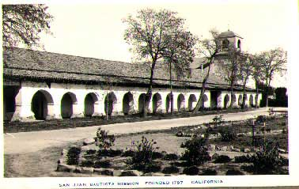

Photograph of Old Mission San Juan Bautista
at circa 1940.
Archaeology
of a California Mission
[Slide Show]
|| Mission Links || Mission-Related Educational Resources || Digital Resources || Archived Sites || Exhibitions ||
Old Mission San Juan Bautista: The Art, Archaeology,
and History of a California Mission
sjbHome/Index.html
San Juan Bautista Historical Society: Luck
Museum
sjbhs/index.html
CSUMB Student Justin Evan's Old Mission Site
http://student.csumb.edu/dh/evansjustinryan/world/
El Camino Real: The Original Information Super
Highway
weblinks/MissionLinks.htm
The San Juan Museum Education Project
Courses/sbsa364s/index.html
San Juan Bautista: An Archaeologist's View
of an Early California Mission
exhibitions/index.html
Library of Congress - Historic American Buildings
Survey
http://lcweb2.loc.gov/pp/hhquery.html